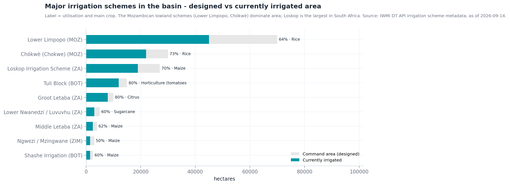
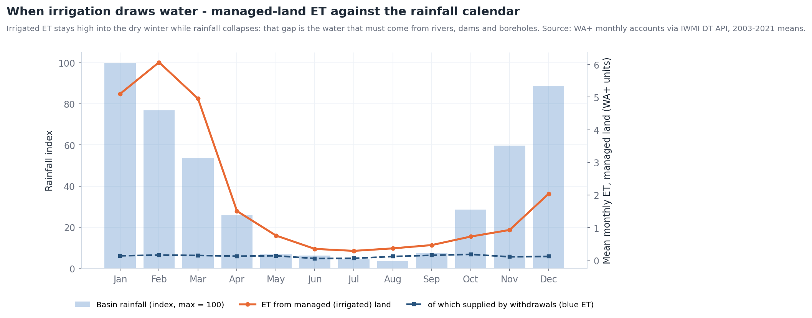
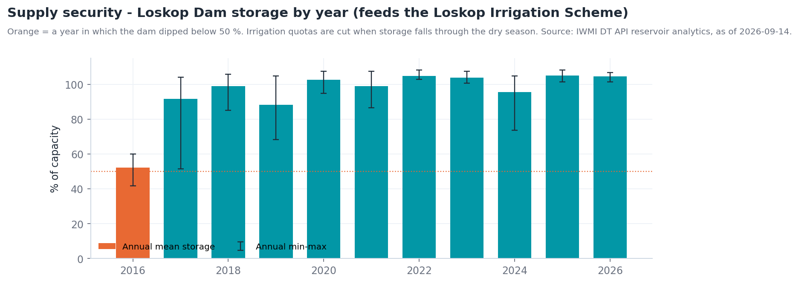

Monitorização do uso de água na irrigação¶
A pergunta¶
Um planeador de recursos hídricos ou um gestor de perímetro quer saber onde está o solo irrigado, se está a crescer e quanta água consome ao longo de uma estação — sem esperar por declarações de licença ou levantamentos de campo.
| Quem | Decisão | Frequência |
|---|---|---|
| Agências de gestão de bacia / água (DWS, ARA-Sul, ZINWA, WUC) | Conformidade de licenças, deteção de irrigação não registada, tetos de repartição | Sazonal (pós-colheita) |
| Associações de regantes e gestores de perímetros | Uso de quotas, calendarização, referências de eficiência entre blocos | Mensal na estação |
| Operadores de barragens | Planeamento de descargas face à procura de irrigação a jusante | Semanal (época seca) |
| LIMCOM / analistas de contabilidade da água | Consumo setorial para a conta da bacia | Anual |
Em resumo
- Irrigated Mapping classifica o solo agrícola irrigado a 20 m a partir do Sentinel-2, como série temporal — a camada a observar para detetar expansão.
- Principais perímetros (projetado → atualmente irrigado): Baixo Limpopo 70 000 → 45 000 ha, Chókwè 30 000 → 22 000 ha, Loskop 27 000 → 19 000 ha, Tuli Block 15 000 → 12 000 ha, Groot Letaba 10 000 → 8 000 ha.
- O solo gerido (irrigado) é 2 % da bacia mas ~8 % da sua evapotranspiração; a sua ET atinge o pico em fevereiro e mantém-se a 15–20 % do pico ao longo do inverno sem chuva — água que tem de vir de barragens, rios e furos.
- A barragem de Loskop, que abastece o maior perímetro sul-africano, tem estado em média a 96 % desde 2017; a sua única crise de abastecimento foi em 2016 (42 %).
Como se encadeia o fluxo de trabalho¶
flowchart TD
A[Irrigated Mapping<br/>linha temporal: ano vs ano] --> B{Irrigação fora das<br/>Irrigation Areas LIMIS?}
B -- sim --> C[Assinalar blocos não registados]
B -- não --> D[Blue ET Africa vs Green ET Africa<br/>Compare]
C --> D
D --> E[Quantificar um perímetro<br/>Water Use Time-series Polygon]
E --> F[Eficiência<br/>Beneficial Fraction · ET Fraction]
F --> G{Abastecimento seguro?<br/>Dams & Reservoirs Basin Level Estimates}
G -- não --> H[Corte de quota · aconselhamento de rega]
G -- sim --> I[Relatório sazonal · Story]
H --> IDados a utilizar¶
| Conjunto de dados | Onde no catálogo | O que indica |
|---|---|---|
| Irrigated Mapping | Natural Basin Characteristic → Land Cover and Land Use | Áreas irrigadas derivadas de satélite (20 m, Sentinel-2), como série temporal |
| Irrigation Areas (LIMIS) | Water Resources → Water Infrastructure | Perímetros de irrigação registados / cartografados (limites de referência) |
| Water Use Time-series (Irrigated Areas) (Polygon) | Water Use Monitoring and Analysis | Um processo de análise: escolha uma área e obtenha a sua série mensal de uso de água (m³) a partir de máscaras de área irrigada × ET WaPOR |
| WaPOR Downscaled · ETa Monthly Limpopo | Natural Basin Characteristic → Climate | Evapotranspiração real — a água efetivamente consumida pelas culturas |
| Blue ET Africa · Green ET Africa | Water Use Monitoring and Analysis → Water Accounting → Evapotranspiration & Water Use | Reparte o consumo em água de irrigação (azul) e de chuva (verde) |
| Beneficial Fraction Africa · ET Fraction Africa · Evaporative Stress Index Africa | mesmo grupo | Quanta da água consumida faz trabalho útil (crescimento da cultura), e stress da cultura |
| Land Use · Land Use (LIMIS) · MODIS NDVI 16-Day Composite | Natural Basin Characteristic → Land Cover and Land Use / Vegetation | Contexto: agricultura vs vegetação natural; vigor da cultura ao longo da estação |
| Dams & Reservoirs Basin Level Estimates · Dam locations | Water Resources → Reservoirs and Storage | Segurança de abastecimento para perímetros alimentados por barragens |
| Groundwater Zones (LIMIS) · Groundwater Level Points | Water Resources → Groundwater | Abastecimento para irrigação a partir de furos |
Percurso¶
- Explore data → Search the catalogue →
Irrigated Mapping→ Add to the map. A camada varia no tempo, pelo que aparece uma linha temporal sob o mapa. - Use Ideal Zoom no cartão da área de trabalho para enquadrar a camada, e depois as setas da linha temporal para avançar entre datas. Os campos irrigados destacam-se como formas nítidas e regulares (círculos de pivô no Tuli Block e em Loskop; blocos de canal em Chókwè) que se mantêm verdes na época seca.
- Adicione Irrigation Areas (LIMIS) e compare: irrigação detetada fora dos perímetros registados é um primeiro sinal de uso não licenciado ou em expansão. Ao longo do curso principal do Limpopo entre o Botsuana e a África do Sul são comuns pivôs ribeirinhos fora dos polígonos LIMIS.
- Adicione Blue ET Africa. Na área de trabalho, reduza a opacidade para ~60 % para os campos continuarem visíveis por baixo. ET azul intensa sobre um campo significa que está a usar água de irrigação, não chuva.
- Use Compare (Ferramentas do Mapa) para pôr Blue ET à esquerda e Green ET à direita para o mesmo mês — em agosto o contraste é máximo: a ET verde é quase nula em todo o lado, a ET azul marca cada bloco irrigado.
- Para quantificar um perímetro: abra Water Use Time-series (Irrigated Areas) (Polygon) em Water Use Monitoring and Analysis, selecione ou desenhe a área de interesse (ou o polígono LIMIS do perímetro) e execute. O resultado é uma série mensal de uso de água em m³ para esse polígono, que pode ler diretamente ou descarregar.
- Adicione Beneficial Fraction Africa sobre o mesmo perímetro: blocos com ET azul elevada mas fração benéfica baixa estão a perder água por evaporação do solo nu — candidatos a aconselhamento de calendarização ou cobertura.
- Adicione Dams & Reservoirs Basin Level Estimates e clique na barragem fornecedora (Loskop, Tzaneen, Middle Letaba, Massingir/Macarretane) para verificar se a procura da estação pode ser satisfeita (Figura 3).
- Story → Capture Scene para as datas antes/depois, e Share / Print a ligação.
Interpretar os gráficos¶
Os gráficos são gerados a partir da API de dados do portal; os rótulos estão em inglês.


- A utilização anda entre 50 e 80 %: a diferença entre área projetada e irrigada é potencial de reabilitação — ou, num ano seco, a área que será cortada primeiro.
- Os perímetros da planície moçambicana (Baixo Limpopo e Chókwè, ~67 000 ha irrigados) dependem do curso principal do Limpopo e das descargas de Massingir; cada decisão a montante chega até eles.
- O arroz em Chókwè e no Baixo Limpopo é a cultura mais exigente em água da bacia; os citrinos e a horticultura (Groot Letaba, Tuli Block) têm o maior valor por m³.


- A ET irrigada atinge o pico em fevereiro com a cultura de verão e cai para ~15 % do pico em junho–agosto — mas a precipitação cai para ~3 %. A irrigação de inverno é quase toda água azul, retirada do armazenamento.
- A linha de ET azul é plana ao longo do ano: as captações são constantes, pelo que a procura de irrigação sobre as barragens não diminui no inverno embora a ET total das culturas diminua — é por isso que o esvaziamento das albufeiras é linear de maio a novembro (ver Monitorização de albufeiras, Figura 3).
- Leia o resultado do Water Use Time-series do portal contra esta forma: um perímetro cujo uso de inverno é uma fração maior do uso de verão está a cultivar trigo ou hortícolas de inverno — e a retirar proporcionalmente mais da barragem.


- Desde 2017 a barragem iniciou cada campanha de irrigação praticamente cheia; a crise de 2016 (mínimo de 42 %) seguiu-se à falha de precipitação de 2015 mostrada em Secas, Figura 2.
- O mínimo anual (fundo da barra de erro) é o indicador de segurança de abastecimento: um mínimo abaixo de 50 % significa que as quotas foram, ou deviam ter sido, cortadas.
Indicadores e o que fazer¶
| Indicador | Onde | Limiar | Ação típica |
|---|---|---|---|
| Variação da área irrigada | Linha temporal de Irrigated Mapping, ano vs ano | > 5 % de crescimento numa sub-bacia | Reconciliar com licenças |
| Irrigação fora de áreas registadas | Irrigated Mapping vs Irrigation Areas (LIMIS) | Qualquer bloco persistente > 2 estações | Inspeção / licenciamento |
| ET azul sobre áreas agrícolas | Blue ET Africa (ago.) | Elevada onde não há perímetro registado | Idem |
| Consumo do perímetro | Water Use Time-series (Polygon) | Acima da repartição (m³/estação) | Fiscalização de quotas |
| Fração benéfica | Beneficial Fraction Africa | Baixa sobre blocos irrigados | Programa de eficiência |
| Armazenamento da barragem fornecedora | Basin Level Estimates a 1 de outubro | < 60 % | Reduzir a repartição da estação |
| Stress da cultura | Evaporative Stress Index Africa · MODIS NDVI | Stress sobre blocos irrigados em plena estação | A água não chega ao campo: verificar perdas de distribuição |
Exemplo prático — dimensionar o uso sazonal de um perímetro¶
- Adicione Irrigation Areas (LIMIS) e amplie para o Loskop Irrigation Scheme no Olifants abaixo da barragem de Loskop.
- Adicione Irrigated Mapping; avance a linha temporal de um ano inicial para um recente. Compare os píxeis irrigados dentro e fora do limite LIMIS — os pivôs ao longo do Olifants a jusante do perímetro são o crescimento.
- Execute Water Use Time-series (Irrigated Areas) (Polygon) sobre o limite do perímetro para os dois últimos anos hidrológicos. Leia os m³ mensais; some out.–set. para o total sazonal e anote a parcela de inverno (forma da Figura 2).
- Adicione Blue ET Africa e Beneficial Fraction Africa para fevereiro: os blocos com ET azul elevada e fração benéfica baixa são os que merecem visita.
- Clique em Loskop em Dams & Reservoirs Basin Level Estimates: 104 % em 10 de setembro de 2026, previsão ainda acima de 90 % em novembro — a repartição da próxima campanha está segura. Repita para Middle Letaba (10,5 %): os 2 500 ha desse perímetro não podem ser totalmente abastecidos nesta campanha.
- Capture o mapa do perímetro, o gráfico de uso de água e ambas as barragens como Story.
Lista de verificação do relatório sazonal¶
- Área irrigada nesta campanha vs anterior (ha), dentro e fora dos perímetros registados
- Uso sazonal de água por perímetro (m³) da série temporal por polígono, com parcela de inverno
- Mapa de ET azul vs verde para o mês de pico e para agosto
- Focos de fração benéfica baixa para seguimento de eficiência
- Armazenamento da barragem fornecedora no início da campanha e previsão no fim
- Ligação da Story
Limites a ter em conta¶
- Os produtos de ET por satélite são estimativas modeladas na sua resolução nativa (WaPOR reamostrado, camadas de ET à escala de África); use-os para padrões e tendências, e valide volumes com captações medidas onde existam.
- Irrigated Mapping é classificado a partir de imagens; a nebulosidade na época das chuvas pode reduzir a confiança em datas individuais — observe várias. Pastagem irrigada e pomares sob rede podem ser subdetetados.
- O Water Use Time-series por polígono corre um processo no servidor; áreas grandes demoram mais e exige sessão iniciada. Devolve consumo (ET), não captação — as perdas de transporte são adicionais.
- Os metadados dos perímetros (área de comando, área irrigada) são compilados de fontes nacionais e diários oficiais; trate-os como indicativos.
Relacionado¶
Contabilidade da água · Monitorização de albufeiras · Secas · Área de trabalho — séries temporais